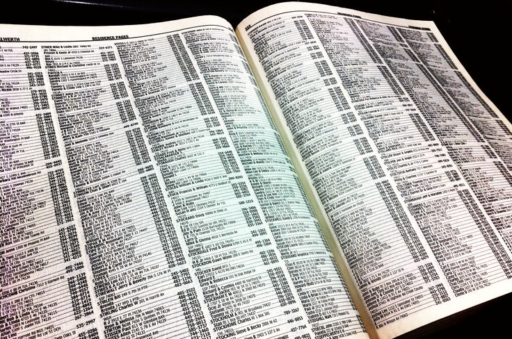

1 Bases de données
1.1 Vocabulaire
| Français | English |
|---|---|
| ouvert d’esprit | open-minded |
| PAO | Desktop Publishing (DTP) |
| aimer faire qqch | to like doing stg |
| ajouter | to add |
| assister à une réunion | to attend a meeting |
| attentionné | caring |
| avoir peur de qqch | to be afraid of stg |
| bavard | chatty |
| bien aimer faire qqch | to enjoy doing stg |
| bien conçu | well-designed |
| bien s’adapter | to fit |
| blanchir | to bleach |
| brillant | glossy |
| carton | cardboard (U) |
| choisir | to choose |
| commander qqch | to order stg |
| d’apparence professionnelle | professional-looking |
| de la cire | wax (U) |
| de la colle | glue (U) |
| dorure à chaud | hot foil stamping |
| dos carré-collé | perfect-binding |
| décrire | to describe |
| délavé | washed out |
| dépenser (ou passer du temps) | to spend |
| empiler | to stack |
| encre | ink |
| enfance | childhood |
| enlever | to remove |
| essayer de faire qqch | to try to do stg |
| expédier qqch | to ship out stg |
| fabriquer qqch | to manufacture stg |
| faire du télétravail | to work from home |
| glaçage | glazing |
| hauteur | height |
| l’amidon | starch (U) |
| la couverture | the cover |
| la graisse (typographie) | the weight |
| la rogne | cut-offs |
| largeur | width |
| le dos d’un livre | the spine |
| longueur | length |
| lycée | high-school |
| mat | matte |
| mélanger (b…) | to blend |
| mélanger (m…) | to mix |
| obsolète | outdated |
| ondulé (carton) | corrugated |
| ondulé | wavy |
| paresseux | lazy |
| pelliculage | lamination |
| permettre à qn de faire qqch | to enable sb to do stg |
| permettre à quelqu’un de faire qqch | to allow sb to do stg |
| piqûre à cheval | saddle-stitching |
| profondeur | depth |
| précédent | previous |
| relier un livre | to bind a book |
| reliure spirales | coil binding |
| remarquer | to notice |
| rugueux | rough |
| réparer | to fix |
| résumer | to summarize |
| s’intéresser à qqch | to be interested in stg |
| se débarrasser de qqch | to get rid of stg |
| suivant | next |
| sécher | to dry |
| tard/en retard | late |
| traiter de | to deal with (dealt x 2) |
| traiter une commande | to run an order |
| travailleur | hard-working |
| télécharger | to download |
| téléverser | to upload |
| un appareil électronique | a device |
| un autocollant | a sticker |
| un blanchet | un blanket |
| un bobine | a reel |
| un bâtonnet (yeux) | a rod |
| un calage | a make-ready |
| un client | a customer |
| un devis | a quote |
| un dépliant | a folded leaflet |
| un entrepôt | a warehouse |
| un logiciel | a software |
| un manchon | a shrinkable sleeve |
| un massicot | a trimmer |
| un métier, commerce | a trade |
| un niveau | a level |
| un nuancier | a fan deck |
| un plateau | a tray |
| un pli roulé (UK) | a roll fold |
| un pli roulé (US) | a tri/letter fold |
| un pli-fenêtre | a gate-fold |
| un pli | a fold |
| un rabat | a flap |
| un revêtement | a coating |
| un rouleau | a roller |
| un stage | an internship |
| un trait | a stroke |
| un volume | a form |
| un écran (d…) | a display |
| un écran (m…) | a monitor |
| un équilibre | a balance |
| une caractéristique, une spécification | a feature |
| une cellule | a cell |
| une couche | a layer |
| une encoche | a notch |
| une entreprise | a company |
| une fente | a slit |
| une forme | a shape |
| une lame | a blade |
| une livraison | a delivery |
| une machine empileuse | a stacker |
| une nuance de couleur | a hue |
| une page | a sheet |
| une plaque | a plate |
| une poignée | a handle |
| une police (de caractères) | a font |
| une rainure | a scoring line |
| une récompense, un prix | a prize |
| une usine | a factory |
| une étape | a step |
| vernis sélectif | spot varnish |
| vif (couleur) | bright |
| écorce | bark (U) |
| épaisseur | thickness |
| être bon dans qqch | to be good at stg |
| un propriétaire | an owner |
| un réseau | a network |
| difficile | tough |
| une falaise | a cliff |
| une vente | a sale |
| acheter | to purchase |
| améliorer, mettre en valeur | to enhance |
| une légende (dessin) | a caption |
| jetable | disposable |
| une marque | a brand |
| un outil | a tool |
| découvrir | to discover |
| une formation | a training course |
| être responsable de | to be in charge of |
| un raccourci de clavier | a keyboard shortcut |
| maîtriser | to master |
| une compétence | a skill |
| réussir à, parvenir à faire qqch | to manage to do stg |
| une épreuve numérique contractuelle | a digital contract proof |
| un motif, un modèle | a pattern |
| commander | to order |
| je devais | I had to |
| un fournisseur | a supplier |
| un formulaire | a form |
| échenillage (courtesy of Bogdan!) | weeding |
| un métier | a trade |
| du tissu | fabric |
| s’assurer de qqch | to ensure |
| actuel | current |
| vérifier | to check |
| aléatoire | random |
| parfait, sans failles | faultless |
| un échantillon | a sample |
| PAO | desktop publishing |
| empêcher | to prevent |
| une échéance | a deadline |
| un diplôme | a degree |
| mettre à jour | to update |
| un domaine | a field |
| en cours, en déroulement | ongoing |
| une commande | an order |
| un stagiaire | an intern |
| s’attendre à qqch | to expect stg |
| des résultats clairs | clear-cut results |
| des résultats mitigés | mixed results |
| un sondage | a poll |
| l’écrasante majorité | the overwhelming majority |
| une infime majorité | a tiny majority |
| 13 sur 21 | 13 out of 21 |
| une exigence | a requirement |
| des activités extrascolaires | extracurricular activities |
| aller à l’étranger | to go abroad |
| être satisfait de | to be satisfied with |
| équilibré | balanced |
| un travail à temps complet | a full-time job |
| un annuaire | a phone-book |
| la taille | the size |
| mélanger | to blend |
| une feuille | a sheet |
| recracher | to spit out |
| le lycée | high school |
1.2 Définitions
| Expression | Definition |
|---|---|
| dot gain | also called tonal value increase. A phenomenon in offset lithography and some other forms of printing which causes printed material to look darker than intended. |
| print registration | In color printing the layering of printed patterns to form a multicolor pattern |
| a pattern | a form or model proposed for imitation |
| a course | a number of lessons dealing with a subject |
| accurate | with no error, especially as the result of care |
| achievable | that can be completed successfully |
| webquest | https://www.print24sa.co.za/ |
| The gathering and arranging of individual sheets or other printed components into a predetermined sequence. Collating creates consistent, logical sets from multiple parts. | Collating |
| Using a sharp blade or shear to reduce a printed piece down to its desired size. Common examples include removing excess paper along crop marks, separating pieces that have been printed as multiple images per sheet, or trimming the open edges of a book to create evenly aligned pages. | Cutting and Trimming |
| The process of making a crease in paper so it will fold easier. Helps improve the appearance of the fold because it provides a consistent guideline. Used mostly on heavyweight papers and cardstock. | Scoring |
| A procedure that bends over a printed piece so that it lies flat upon itself. | Folding |
| the process of bonding a clear plastic film onto printed matter to protect it against stains, smudges, moisture, wrinkles, and tears. Greatly improves durability. Also enhances the vibrancy of the ink colors. A popular choice for printed items that must endure heavy use, such as educational materials, flip charts, book covers, restaurant and bar menus, maps, and consumer displays. | Laminating |
| Using a thin sharp blade, that has been pre-formed into a specific pattern or outline, to cut paper, cardstock, labelstock, or other substrates into various shapes. | Die-Cutting |
| Aprocedure that creates a series of very fine holes in paper or cardstock, usually along a straight line, to allow a portion of the printed piece to be easily detached by hand. Used for a variety of purposes, such as coupons, ID cards, response cards, and remittance slips. | Perforating |
| Involves the printing of ascending or descending identification numbers so that each printed unit receives its own unique number. This unique number can appear in one position, or in multiple positions, on each document. In addition to providing a method for easy reference, sequential numbers provide a high degree of accounting control. Frequently used on contracts, invoices, purchase orders, quote forms, checks, raffle tickets, contest entries, or virtually any printed item that needs unique identification. | Sequential Numbering |
| A tough clear-coat applied over printed materials to improve resilience and appearance. This coating is applied in liquid form, then exposed to Ultra-Violet light which bonds and dries it instantly. | UV-Coating |
| An economical water-based clear-coat applied to printed pieces to help protect the ink and paper against minor scuffs and abrasions. | Aqueous Coating |
| Refers to the process of creating round holes in paper using a rotating bit, such as the hole patterns needed for sheets and dividers placed into ringed binders. | Drilling |
| Refers to the method of pressing an image into paper or cardstock to create a three dimensional design. Embossing results in a raised surface, while debossing results in a depressed surface. | Embossing / Debossing |
| A specialized process that uses heat and pressure to apply a metallic foil design to a printed piece. The foil is usually a gold, silver, or copper tone, though a variety of colors are available. | Foil Stamping |
| Applying a flexible adhesive along one edge of a stack of same-sized sheets. The adhesive secures the sheets as a unit, but allows the topmost sheet to be easily removed as needed. In most cases, padded sheets incorporate a chipboard backer for rigidity. Common examples include notepads, memo pads, and order pads. | Padding |
| A packaging method that encloses bundles of printed matter within a transparent plastic film. The application of heat makes the film shrink around the printing to secure it tightly. In addition to providing a layer of protection, shrinkwrapping is a cost-effective way to create convenient-sized packs, allowing for easier handling and distribution of the printed pieces. | Shrinkwrapping |
| Binding is a broad term used to describe the gathering and fastening together of separate sheets or signatures. Binding can be as simple as placing a single staple through the corner of a set of documents. However, binding usually refers to the creation of durable books and booklets. Examples of popular binding methods include perfect binding, saddle-stitching, spiral/coil binding, and wire-o binding, as well as the insertion of components into a ringed binder. | Binding |
1.3 Traductions
| Français | English |
|---|---|
| J’ai appris à parler aux clients | I learned how to speak to customers |
| L’entreprise était située à Paris. | The company was located in Paris. |
| Nous imprimions des cartes de visites et des brochures | We printed business cards and booklets |
| Je devais venir à 8 heures du matin. | I had to come at 8. |
| J’ai assisté à des réunions très intéressantes. | I attended very interesting meetings. |
| J’ai fait un stage pendant 2 mois | I did an internship for 2 months |
| Je devais retoucher des photos | I had to edit photos |
| Mon entreprise imprimait des dépliants et des cartes de visite | My company printed booklets and business cards |
| J’ai appris de nouvelles compétences | I learned new skills |
| J’aimerais bien travailler à nouveau dans cette entreprise | I would like to work in this company again |
| Mes collègues m’ont beaucoup aidé | My colleagues helped me a lot |
| J’ai assisté à deux réunions avec des clients | I attended two meetings with customers |
| J’ai fait du télétravail | I worked from home |
| Ce document parle de nouveaux processus d’impression. | This document deals with new printing processes. |
| Pendant mon stage, j’ai appris de nouvelles compétences. | During my internship, I learned new skills. |
| Mon entreprise était située à Paris. | My company was located in Paris. |
| Je devais venir à 8 heures du matin. | I had to come at 8 in the morning. |
| J’ai choisi ce document parce que les nouvelles technologies m’intéressent beaucoup. | I chose this document because I’m highly interested in new technologies. |
| J’ai démarré ce métier quand j’étais encore au lycée | I started in this trade when I was still in high school |
| Je suis dans cette entreprise depuis 9 ans. | I’ve been in this company for nine years. |
| Nous lavons les blanchets, ce qui enlève l’encre et le papier. | We wash the blankets, which removes ink and paper |
| Nous changeons aussi les plaques de chaque presse. | We also change the plates of each press. |
1.4 Prononciation
| Word | Sounds | Stress | Received Pronunciation | General American |
|---|---|---|---|---|
| customer | /100/ | /’kʌst.əm.ə/ | /’kʌst.əm.ər/ | |
| company | /100/ | /’kʌmp.ən.i/ | /’kʌmp.ən.i/ | |
| internship | /100/ | /’ɪn.tɜːn.ʃɪp/ | /’ɪn.tɜːn.ˌʃɪp/ | |
| document | /100/ | /’dɒk.ju.mənt/ | /’dɑːk.ju.mənt/ | |
| paragraph | /100/ | /’pær.ə.grɑːf/ | /’per.ə.ˌgræf/ | |
| website | /10/ | /’web.saɪt/ | /’web.ˌsaɪt/ | |
| manager | /100/ | /’mæn.ɪdʒ.ə/ | /’mæn.ɪdʒ.ər/ | |
| colleague | /10/ | /’kɒl.iːg/ | /’kɑːl.iːg/ | |
| software | /10/ | /’sɒft.weə/ | /’sɔːft.ˌwer/ | |
| process | /10/ | /’prəʊs.es/ | /’prɑːs.ˌes/ | |
| develop | /010/ | /di.’vel.əp/ | /di.’vel.əp/ | |
| pandemic | /010/ | /pæn.’dem.ɪk/ | /pæn.’dem.ɪk/ | |
| meeting | /10/ | /’miːt.ɪŋ/ | /’miːt.ɪŋ/ | |
| weight | /1/ | /weɪt/ | /weɪt/ | |
| manage | /10/ | /’mæn.ɪdʒ/ | /’mæn.ɪdʒ/ | |
| skill | /1/ | /skɪl/ | /skɪl/ | |
| pattern | /10/ | /’pæt.ən/ | /’pæt.ən/ | |
| proof | /1/ | /pruːf/ | /pruːf/ | |
| article | /100/ | /’ɑːt.ɪk.əl/ | /’ɑːt.ɪk.əl/ | |
| speak | /1/ | /spiːk/ | /spiːk/ | |
| ensure | /01/ | /ɪn.’ʃɔː/ | /ɪn.’ʃʊr/ | |
| fabric | /10/ | /’fæb.rɪk/ | /’fæb.rɪk/ | |
| current | /10/ | /’kʌr.ənt/ | /’k3r ːr.ənt/ | |
| cylinder | /100/ | /’sɪl.ɪnd.ə/ | /’sɪl.ɪnd.ər/ | |
| package | /10/ | /’pæk.ɪdʒ/ | /’pæk.ɪdʒ/ | |
| technician | /010/ | /tek.’nɪʃ.ən/ | /tek.’nɪʃ.ən/ | |
| pressure | /10/ | /’preʃ.ə/ | /’preʃ.ər/ | |
| detail | /10/ | /’diː.teɪəl/ | /diː.’teɪl/ | |
| degree | /01/ | /di.’griː/ | /di.’griː/ | |
| field | /1/ | /fiːəld/ | /fiːld/ |
1.5 Échéances
| Échéances | Description | Jours restants |
|---|---|---|
| 28/09/2021 | ERPC1 : Préparer la présentation orale des résultats de sondage | 7 |
| 01/10/2021 | ERPC2 : Préparer la présentation orale des résultats de sondage | 10 |
| 05/10/2021 | ERPC3 : Préparer la présentation orale des résultats de sondage | 14 |
1.6 Flashcards
| Images | Expressions |
|---|---|
| a blanket | |
| a cliff | |
| a misprint | |
| a network | |
|  | a phonebook |
| a shortcut | |
| a shrink sleeve label | |

|
a trimmer |
| a workflow | |

|
an offset plate |
| desktop publishing | |

|
die cutting |
| embossing debossing | |

|
embossing |
| eye sight | |
| fabrics | |
| flexographic printing | |
| foil stamping | |
| foil | |
| ink | |
| misalignment in CMYK registration | |
| offset plates | |
| offset printing | |

|
perfect binding |
| rgb | |

|
saddle stitching |
| scoring | |
| shrinkwrapped bottles | |
| spot uv coating | |
| to dry something | |
| to grow | |
| to remove wallpaper | |
| to upload | |
| trimming | |
| workflow |